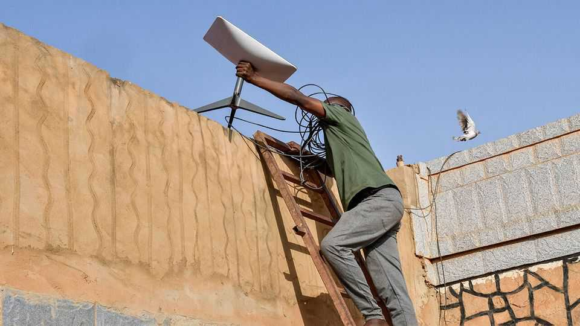

Africans are turning to Starlink
They are fed up with the continent’s terrible internet
July 2nd 2026

Ekiti, a state in south-western Nigeria, is named after the Yoruba word for hill. In the 19th century, its rocky terrain was useful for self-defence. It is less ideal for 21st-century commerce, as Akin Oyebode has found. The state commissioner wants to boost the economy of Ekiti. But that goal is being hampered by terrible network connections. Connecting mobile towers or getting fibre cables up the hills from the landing point 250km away in Lagos, the commercial capital, is expensive, and he has struggled to persuade internet providers to bring more of their infrastructure closer. But recently the government’s connection, at least, has improved—thanks to Starlink, the satellite-internet service provided by Elon Musk’s SpaceX.
Mr Oyebode is not alone. Maddened by poor connections, more governments and rich Africans are turning to satellite terminals. For now, it is an expensive stop-gap. But in the coming years it could boost connectivity, both by providing internet to more Africans and by spurring broadband providers to improve.
Africa’s internet infrastructure is not fit for purpose. During a communications boom in the early 2000s, the continent eschewed fixed-line internet for cheaper mobile broadband; today more than 400m Africans, the bulk of the continent’s users, gain access to the internet this way.
But the technology has not kept pace with the rapid increase in data demand from streaming and AI-powered applications. Even in big cities like Lagos and Nairobi, Kenya’s capital, WhatsApp video calls can be glitchy. And things will get worse. Traffic is expected to at least triple by 2030. Cabled fibre internet, which has much higher capacity, is used by less than 1% of Africans and is being expanded too slowly. Nigeria alone “has a shortage of 90,000 kilometres of fibre-optic network”, says Bosun Tijani, the digital-economy minister. Africa as a whole is probably short by hundreds of thousands.
All this made the continent fertile ground for Starlink when SpaceX started the service there in 2023. Starlink relies on satellites, not cables or mobile-phone towers. It is useful for programmers trying to supplement the patchy network in a co-working space in a city and for aid workers in far-flung areas with no cables. Starlink is most active in Nigeria, where it first launched, and Zimbabwe. But it offers its services in 27 African countries and it is likely to have 1m customers on the continent by early next year, says TMF Associates, a satellite-industry analysis firm (today some 12m people subscribe globally, according to SpaceX).
Starlink will not fix everything. It is much pricier than mobile internet, and often costs more than even fibre broadband. The service, like existing providers, can struggle to meet rising demand. After launching in Kenya it could not cope with the pace of sign-ups in Nairobi, so halted new subscriptions for seven months to maintain connection quality. In Ekiti’s fortress capital, says Mr Oyebode, the weather can mess up the signal: “You need a backup in those heavy months of rain.”
Starlink’s most important role is therefore to spur competition in a complacent industry. “When Starlink came in, [data] prices went down. That is a welcome change,” says Babacar Seck, a tech investor. MTN Nigeria, the biggest subsidiary of Africa’s biggest telecoms provider, raked in $723m in profits last year, 21% of its revenue. Fears of losing its most lucrative customers to Starlink may prompt it to invest more to serve them better.
Starlink does have competitors, though none can yet match its speed or capacity. OneWeb, run by Eutelsat, a French firm, does not sell to consumers, but helps telecom firms provide mobile internet in remote areas, including in the Democratic Republic of Congo and Ivory Coast. Starlink is partnering with Airtel Africa on a similar venture. Nigeria is investing in its own satellites and licensed three more providers this year, including Amazon’s Leo, though they have yet to start operating. If Starlink can provoke more rivals to step up their game, the benefits could soon spread more widely. ■
Sign up to the Analysing Africa, a weekly newsletter that keeps you in the loop about the world’s youngest—and least understood—continent.